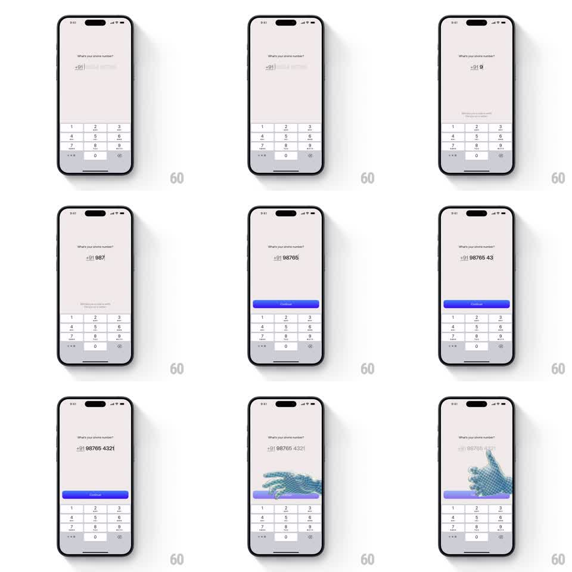

Media
Frame-by-frame

Rebuild this interaction 1:1: Tilt's phone-number onboarding - a number pad flow where each digit lands with springy character, and a 3D hand animation ushers the transition forward.

Rebuild this interaction 1:1: Tilt's phone-number onboarding - a number pad flow where each digit lands with springy character, and a 3D hand animation ushers the transition forward. ## Integration Integration: stack-agnostic spec - springs given as stiffness/damping, timed motions as duration + curve; map every value to your framework and animation library of choice. ## Scene Onboarding screen: "What's your number?" prompt, a large phone-number field with country code, and a custom numeric pad below. On completion, a 3D hand (pointing/swiping) springs in to carry the transition to the next step. ## Motion spec Pattern: springy digit entry + 3D hand transition. - Each key tap: the key compresses (scale 0.92, 80ms) and the digit pops into the field from below (translateY 12px to 0, spring ~400/24) with the caret sliding right. - Backspace: the digit slides up and fades (150ms) while the field contracts with a small bounce. - Digits group-format live (spacing animates as groups form - e.g. the gap after the area code springs open over 150ms). - When the number validates, the Continue button springs up (scale 0.9 to 1, spring ~380/22) and fills with the accent color (150ms). - On Continue: the 3D hand enters from the right edge (spring ~280/24), performs its point/swipe gesture across ~700ms, and the whole screen follows the gesture direction out (300ms, ease-in) as the next screen slides in behind it. ## Calibration - Digit entry must keep up with fast typing - no queuing delay; springs overlap freely. - The hand is a rendered 3D asset with real lighting, not a flat emoji. ## Reduced motion Digits appear instantly; screen crossfades without the hand. ## Don't miss - The field never shifts horizontally as digits group - anchors stay fixed so the number reads stable. - The hand's gesture direction matches the navigation direction (push right-to-left).